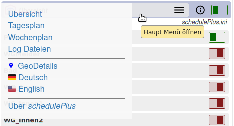
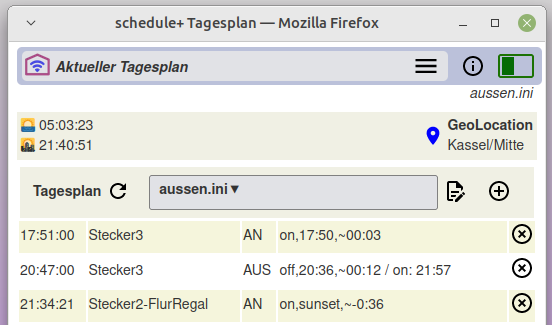

schedule+ Übersicht
schedule+ Übersicht
2022-06-23
Beleuchtung flexibel schalten mit WLAN/Tasmota
schedule+ ermöglicht das zentrale Schalten und Einstellen von WLAN-fähigen Geräten über mobile Endgeräte wie Smartphones/Tablets oder auch am PCs.
Schaltzeiten und Dimmen von Beleuchtungskörpern lassen sich frei definieren. Zeitangaben können sich an Sonnenaufgang/Sonnenuntergang orientieren und mit zufälligen Zeitspannen variieren. Solche Einstellungen werden auch zu Tages- und Wochenplänen zusammengefasst.
Mit derart gestalteten Schaltplänen wird Aktivität im Haus auch bei Abwesenheit simuliert.
Die schedule+ Funktionen sind auf mehreren WEB-Seiten gruppiert und bieten Einstellungen, Bedienung, Meldungsverfolgung oder den Aufruf der Dokumentation mit einer einfach zu bedienenden Menüsteuerung.
schedule+ richtet sich an Nutzer, die Smartphones oder PCs als Zentrale zum Schalten und Einstellen der Hausinstallation verwenden möchten und gleichzeitig in der Lage sein wollen, die Einstellungen einfach zu ändern - beispielsweise den Tagesplan.
Schaltzeiten und Dimmen von Beleuchtungskörpern lassen sich frei definieren. Zeitangaben können sich an Sonnenaufgang/Sonnenuntergang orientieren und mit zufälligen Zeitspannen variieren. Solche Einstellungen werden auch zu Tages- und Wochenplänen zusammengefasst.
Mit derart gestalteten Schaltplänen wird Aktivität im Haus auch bei Abwesenheit simuliert.
Die schedule+ Funktionen sind auf mehreren WEB-Seiten gruppiert und bieten Einstellungen, Bedienung, Meldungsverfolgung oder den Aufruf der Dokumentation mit einer einfach zu bedienenden Menüsteuerung.
schedule+ richtet sich an Nutzer, die Smartphones oder PCs als Zentrale zum Schalten und Einstellen der Hausinstallation verwenden möchten und gleichzeitig in der Lage sein wollen, die Einstellungen einfach zu ändern - beispielsweise den Tagesplan.
schedule+ läuft als Anwendung auf einem RaspberryPI (RPI).
Unterstützte WLAN Geräte, Installation und Einrichtung ▸ siehe hier
schedule+ -- Startseite / Geräte im WLAN
Abb.1 zeigt die Startseite der App mit den im WLAN verfügbaren Geräten mit seinen Namen und seinen jeweiligen Zuständen. Schaltgeräte werden mit einem grünen=EIN oder roten=AUS Schalter dargestellt, Dimmer mit einem Schieber. Diese Elemente dienen auch zum EIN/AUS Schalten bzw. zur Veränderung der Dimmhelligkeit.

Startseite - Abb.1
Erläuterungen
- schedule+ Kopfzeile -- erscheint auf allen WEB-Seiten und bietet zwei Funktionen: den Zugang zum Haupt Menü und den Tagesplan Schalter
- zum Haupt Menü -- durch Antippen oder MouseClick öffnet sich das ▸ Haupt Menü
- Tagesplan Schalter -- vorübergehendes Suspendieren des aktiven Tagesplanes mit dem zeitgesteuerten Schalten/Dimmen.
- Hinweiszeile -- In der Zeile rechts wird angezeigt, welcher "Tagesplan" geladen und aktiv ist.
- Schaltgerät EIN/AUS -- zeigt den aktuellen Zustand, Schalten durch Antippen oder MouseClick
- Dimmen mit Schieber -- der Schieber zeigt den Helligkeitswert, Ändern durch Ziehen am Knopf
- Links zu Log Dateien -- Aufruf verschiedener Ereignisaufzeichnungen
- URL der Anwendung -- siehe Installation/Einrichtung
schedule+ Haupt Menü
Die schedule+ App hat auf allen Seiten eine Kopfzeile, diese ist eine Menü-Schaltfläche zum Öffnen des 'Haupt Menü'. Das geöffnete Menü bietet den Zugang zu den schedule+ Funktionen, so geht es von hier immer wieder zurück zur Startseite [Übersicht].

Haupt Menü - Abb.2
Das geöffnete 'Haupt Menü' zeigt im ersten Abschnitt Menüpunkte zu den wesentlichen Funktionsbereichen:
▸ Übersicht, ▸ Tagesplan, ▸ Wochenplan, ▸ Log Dateien, diese werden nachstehend beschrieben.
GeoDetails wählt den Einsatzort der Anwendung mit seinen GeoCoordinaten aus. Dies ist wichtig, um die täglichen Zeiten für Sonnenaufgang und -untergang zu ermitteln.
üá©üá™ Deutsch und üá∫üá∏ English setzen die Sprachenauswahl f√ºr die Benutzeroberfl√§che und Dokumentationssprache.
GeoDetails wählt den Einsatzort der Anwendung mit seinen GeoCoordinaten aus. Dies ist wichtig, um die täglichen Zeiten für Sonnenaufgang und -untergang zu ermitteln.
üá©üá™ Deutsch und üá∫üá∏ English setzen die Sprachenauswahl f√ºr die Benutzeroberfl√§che und Dokumentationssprache.
Tagesplan -- Arbeiten mit Zeitplan
schedule+ bietet ein einfaches menügesteuertes Konzept für die Definition von Tagesplänen, die aus einer Zusammenstellung von Schaltvorgängen (gen. Jobs) bestehen.
Job Definition
Mit schedule+ definiert der Nutzer zu welcher Zeit ein Gerät geschaltet werden soll -- dies wird als Job bezeichnet.
Die Zeit Definition eines 'Jobs' erfolgt mit absoluter Zeitangabe, relativ zu einer vorher definierten Zeit (z.B. um ein Gerät nach einer bestimmten Zeit auszuschalten) oder auch relativ zu
Mehrere Aktionen für dasselbe Gerät können als ein Job definiert werden.
Die Zeit Definition eines 'Jobs' erfolgt mit absoluter Zeitangabe, relativ zu einer vorher definierten Zeit (z.B. um ein Gerät nach einer bestimmten Zeit auszuschalten) oder auch relativ zu
Sonnenaufgang / Sonnenuntergang. Alle
Zeitangaben sind variabel mit Zufallszeiten.
Mehrere Aktionen für dasselbe Gerät können als ein Job definiert werden.
Tagesplan
Ein Tagesplan besteht aus einer Reihe von zusammengefassten Jobs. Die Tagesplan Definition bezieht sich jeweils auf einen Tagesablauf und wird unter einem beliebigen Namen als Text Datei (mit Erweiterung '.ini') abgespeichert -- z.B. 'schedulePlus.ini ▼'.

Tagesplan Beispiel - Abb.3
Der 'Aktuelle Tagesplan' zeigt als Tabelle in den Zeilen die Jobs, d.h. die Schaltzeiten der Geräte mit ihren geplanten Funktionen (EIN/AUS/SET/NEW).
Hinweis -- Beim Aufruf des 'Aktuellen Tagesplans' werden nur noch die Jobs angezeigt, die an diesem Tag ausstehen.
Mit dem  Zeichen rechts in der Zeile lässt sich der Job zur Ausführung löschen.
Zeichen rechts in der Zeile lässt sich der Job zur Ausführung löschen.
Hinweis -- Die Löschung erfolgt nur für den aktiven Tagesplan, die Tagesplan (.ini) Datei wird dabei nicht geändert!
Die Kopfzeile der Tagesplan Tabelle dient für weitere Funktionsaufrufe:

- hier im Beispiel: 'aussen.ini ▼', dient auch als Auswahlmenü zum Laden anderer Tagespläne
 Der Tagesplan wird aktualisiert mit den noch anstehenden Jobs des Tages
Der Tagesplan wird aktualisiert mit den noch anstehenden Jobs des Tages
 Aufruf des Editor zur Bearbeitung des angezeigten Tagesplanes
Aufruf des Editor zur Bearbeitung des angezeigten Tagesplanes Hinzufügen eines Jobs nur zum aktiven Tagesplan, aber nicht zur (.ini)Datei. Somit hat dieser Job nur Gültigkeit für den aktuellen Tag; generelle Änderungen am Tagesplan erfolgt nur mit dem Editor.
Hinzufügen eines Jobs nur zum aktiven Tagesplan, aber nicht zur (.ini)Datei. Somit hat dieser Job nur Gültigkeit für den aktuellen Tag; generelle Änderungen am Tagesplan erfolgt nur mit dem Editor.
In der Mitte die Anzeige des aktuellen Tagesplanes:
Links zum Aktualisieren des Tagesplanes:
Rechts zur Bearbeitung des Tagesplanes:
Oberhalb der Tagesplan Tabelle stehen die aktuellen Sonnenauf- und -untergangszeiten, die täglich mit der lokalen GeoLocation berechnet werden. Über das Symbol GeoLocation wird eine Karte aufgerufen, auf der die aktuelle Geolocation überprüft und ggf. eingestellt werden kann.
Wochenplan

Der Wochenplan definiert für jeden Wochentag unterschiedliche Tagespläne. Ist für einen Wochentag kein Tagesplan definiert (oder ist er nicht verfügbar), wird der Plan des vorherigen Tages weiterverwendet. So lassen sich z.B. unterschiedliche Pläne
für die Tage Montag bis Freitag und für das Wochenende angeben.
Log Dateien

Die Log Datei Seite lädt eine Liste der [ ▸ Heute] bereits ausgeführten Jobs.
Über die Wochentage lassen sich die Aufzeichnungen an den vorangegangenen Wochentagen aufrufen. Diese Listen werden kontinuierlich täglich im Wochenrythmus geschrieben.
Über die Wochentage lassen sich die Aufzeichnungen an den vorangegangenen Wochentagen aufrufen. Diese Listen werden kontinuierlich täglich im Wochenrythmus geschrieben.
Über die Seite "Übersicht" lassen sich alle erfolgten Job Ausführungen und weitere Details abrufen (siehe oben).